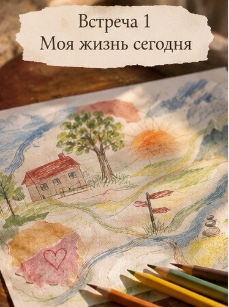
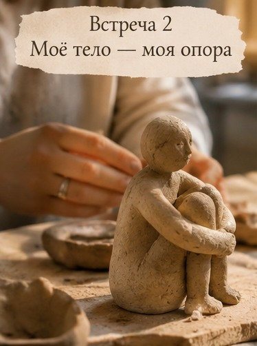
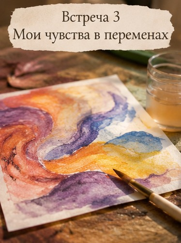
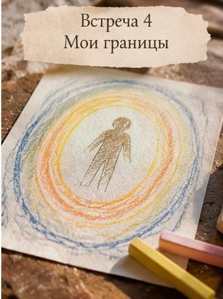
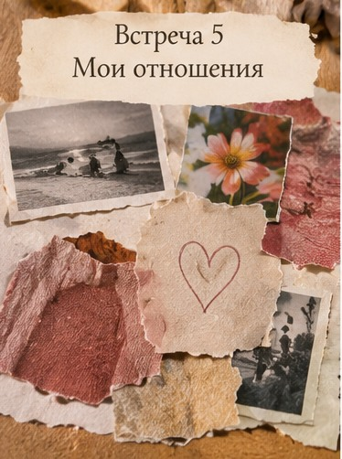
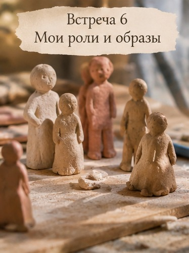
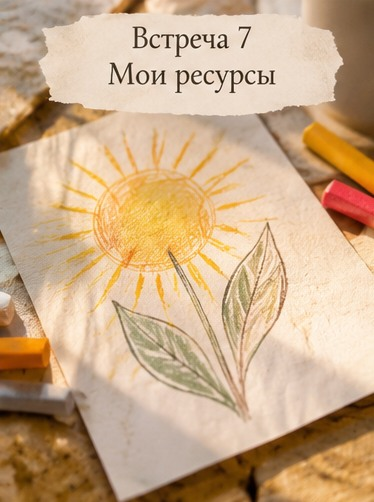
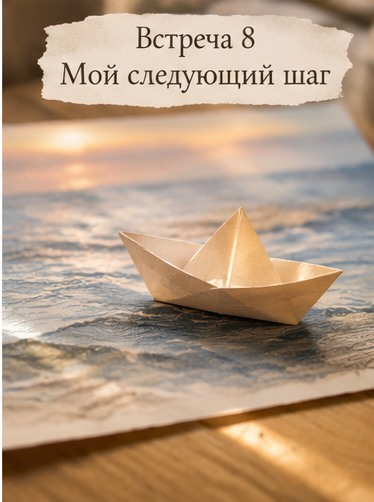

ПЕРЕХОД
Группа поддержки в период жизненных перемен: переезд, развод, смена работы и начало нового этапа жизни.
Иногда жизнь меняется неожиданно. Мы переезжаем, расстаёмся, теряем работу, начинаем всё сначала или понимаем, что прежняя жизнь больше нам не подходит.
Даже желанные перемены могут приносить тревогу, растерянность и ощущение, что привычная почва уходит из-под ног.
Это место, где можно поговорить о происходящем, встретить людей с похожими переживаниями и постепенно разобраться, как жить в новых обстоятельствах. Мы будем разговаривать, делиться опытом и использовать творческие практики.
Не нужно сразу знать, куда двигаться дальше.
Как присоединитьсяВедущая: Анна Анопова
Если вы переживаете перемены
Переезд, расставание, смена работы, новые обстоятельства, важное решение или ощущение, что начинается другой этап жизни. Группа открыта для женщин и мужчин. Необязательно иметь готовый запрос или план действий.
Восемь онлайн-встреч
На каждой встрече — разговор, простая творческая практика и возможность поделиться тем, что оказалось важным. Художественная подготовка не нужна.
01Что изменилось?
Знакомимся и говорим о переменах, которые привели нас в группу. Создаём карту своей жизни сегодня.

02Что я оставляю позади?
Исследуем, с чем пришлось расстаться: привычками, планами, местами, отношениями или представлениями о будущем.

03Почему мне так непросто?
Говорим о страхе, злости, грусти, облегчении и других чувствах, которые могут сопровождать перемены.

04Что в моей жизни осталось прежним?
Ищем то, на что можно опереться: людей, воспоминания, привычки, способности и важные для нас вещи.

05А кто я теперь?
Исследуем, как меняются наши роли и представления о себе, когда привычная жизнь становится другой.

06Чего я хочу сейчас?
Пробуем отделить собственные желания от ожиданий окружающих и понять, что действительно важно.

07Что я могу изменить?
Разбираемся, на что мы можем повлиять, а что пока остаётся вне нашего контроля. Ищем небольшие возможные шаги.

08Моя следующая глава
Создаём образ будущего без необходимости заранее знать все ответы. Завершаем встречи и собираем открытия.

Как устроена группа
В первую очередь мы встречаемся онлайн: можно присоединиться из любого города или страны. Это закрытая группа — состав участников остаётся постоянным на протяжении программы.
- Формат: онлайн, видеовстречи
- Программа: 8 встреч по 2 часа
- Участники: женщины и мужчины, небольшая группа 6–8 человек
- Подход: разговор, поддержка и творческие практики
- Стоимость и даты: уточняются перед началом набора
Можно участвовать в обсуждении в комфортном для себя объёме. Мы договариваемся о бережном отношении друг к другу и конфиденциальности личных историй. Для некоторых творческих заданий пригодятся бумага, карандаши и другие простые материалы.
Оставить предварительную заявкуЗаявка не обязывает участвовать. Перед началом группы можно задать вопросы о формате.